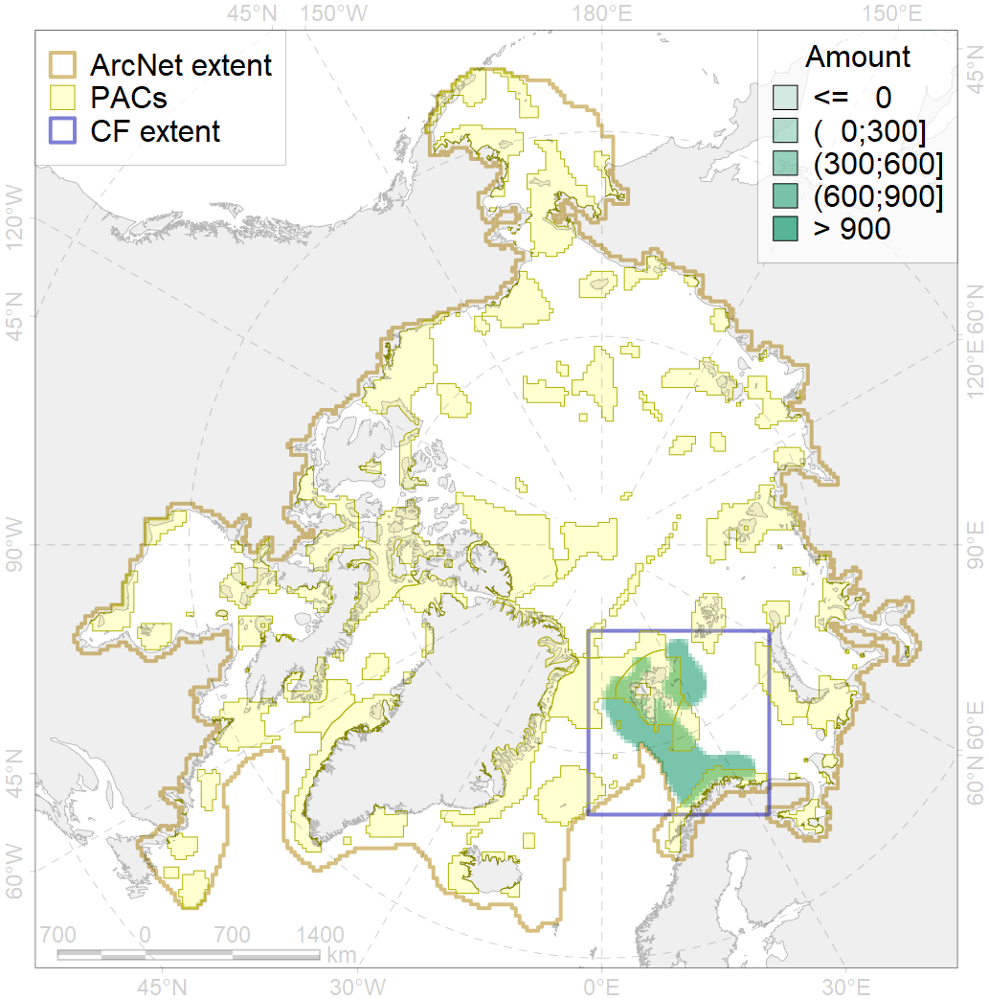
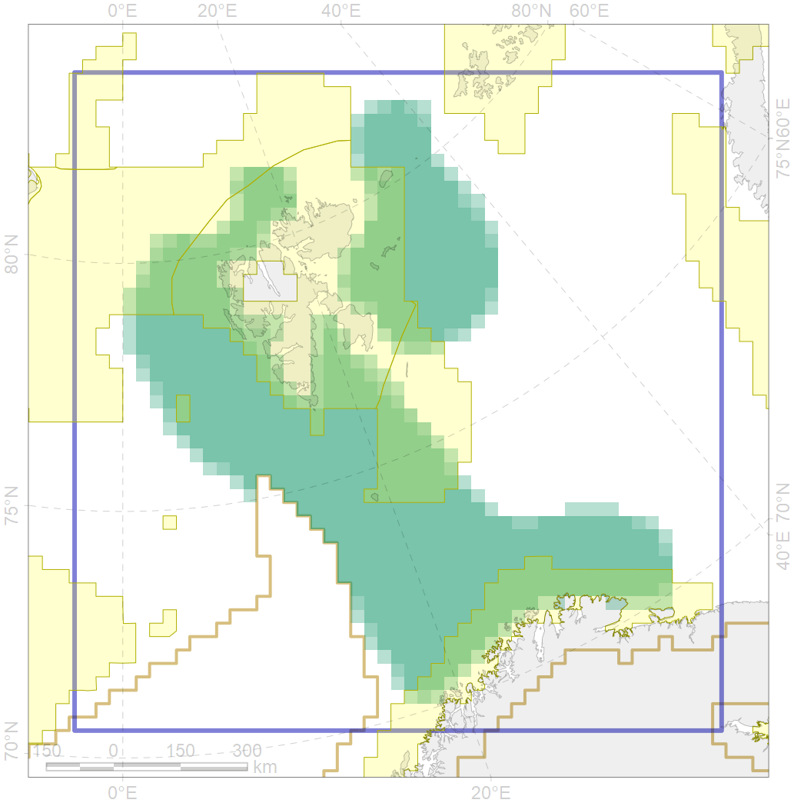

5051

| CF ID | 5051 |
| CF Name | Fin whale summer feeding areas in Norway |
| Time Period | 1987-2016 |
| Source(s) | Øien et al 2009; Sken-Mauritzen et al. 2009; Klepikovsky et al 2017; Vacquie-Garcia et al 2017 |
| Seasonality | June-September |
| Depth Horizon | 0-200 |
| Methodology | Aerial and ship surveys |
| Author Name | Filatova |
| Notes | |
| Conservation Target Set in the Scenario | 0.264 |
| Conservation Target Achieved in the Scenario | 0.362 (Scenario: 137.0%) |
| PAC ID | Proportion in the PAC | Contribution to ArcNet Target Achievement | PAC’s Contribution to the Achieved Target |
|---|---|---|---|
| 27 | 9.8% | 28.3% | 20.6% |
| 29 | 2.7% | 10.0% | 7.3% |
| 30 | 17.7% | 65.4% | 47.7% |
| 31 | 6.4% | 22.4% | 16.3% |
| 35 | 0.3% | 1.2% | 0.9% |
| inner | 36.9% | 127.2% | 92.9% |
| outer | 63.1% | 9.8% | 7.1% |